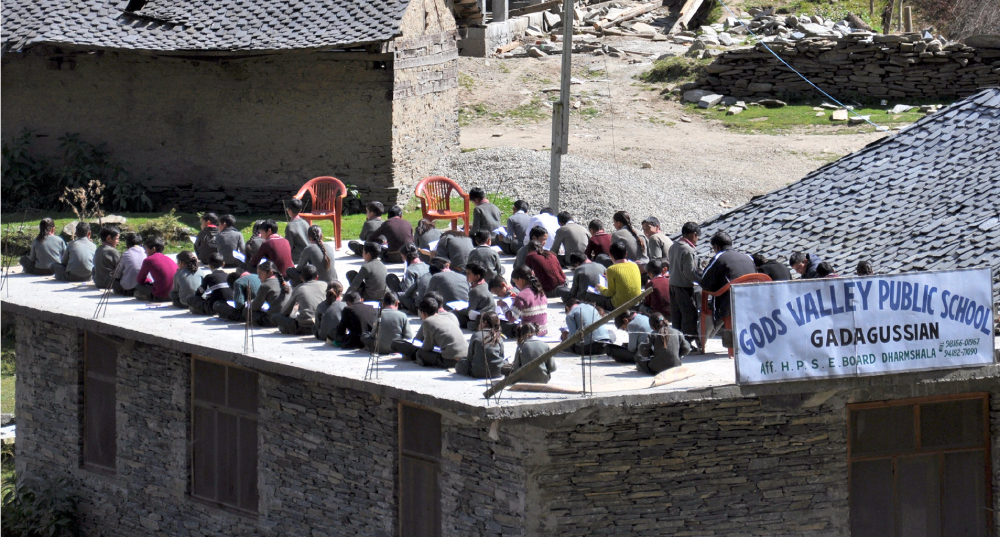

RESEARCH
A journey and stay in remote village of Kullu valley region for 14 daysin a group of six was ccarried out and documented through observation and ergonomic research. The project was carried out as a part of recording the craft and creating awareness about the culturally enriched, artistic technique of metal craft to the world. Students at NIFT and other universities can thereby access it to help take the craft forward and help it take a rebirth.
A journey and stay in remote village of Kullu valley region for 14 daysin a group of six was ccarried out and documented through observation and ergonomic research. The project was carried out as a part of recording the craft and creating awareness about the culturally enriched, artistic technique of metal craft to the world. Students at NIFT and other universities can thereby access it to help take the craft forward and help it take a rebirth.

BOOK - "PRAHAR"
Initial study involved the study of various craft cluster in Kullu region of Himachal Pradesh and the factors that caused their settlements. By travelling through the region of Kullu and camping with craft clusters there, we also studies the ergonomics of craftsmen with their tools. Every craftsmen use their own custom made tools, since obtaining such tools outside can cost them a fortune. Apart from that, we also conducted study on the cultural, educational, sanitary and economic conditions of the regions which are also a major factors affecting the people and craft in the region. The journey extremely moved me from a student to a curious researcher and helped me empathetically understand the needs of communities by closely observing them in their own environment.
Initial study involved the study of various craft cluster in Kullu region of Himachal Pradesh and the factors that caused their settlements. By travelling through the region of Kullu and camping with craft clusters there, we also studies the ergonomics of craftsmen with their tools. Every craftsmen use their own custom made tools, since obtaining such tools outside can cost them a fortune. Apart from that, we also conducted study on the cultural, educational, sanitary and economic conditions of the regions which are also a major factors affecting the people and craft in the region. The journey extremely moved me from a student to a curious researcher and helped me empathetically understand the needs of communities by closely observing them in their own environment.
BOOK - "PRAHAR"
The journey extremely moved me from a student to a curious researcher and helped me empathetically understand the needs of communities by closely observing them in their own environment. Moreover, we discovered the various techniques used in each artworks which are used for religious purposes at temples and monuments. These techniques also vary from one craftsmen to another.
The journey extremely moved me from a student to a curious researcher and helped me empathetically understand the needs of communities by closely observing them in their own environment. Moreover, we discovered the various techniques used in each artworks which are used for religious purposes at temples and monuments. These techniques also vary from one craftsmen to another.

READ THE BOOK
The book is now placed in the library of NIFT, Kangra for future reference by students to understand and implement the craft in new forms and help the craft attain a new identity in this technologically advancing world. Here is the link to the complete book
The book is now placed in the library of NIFT, Kangra for future reference by students to understand and implement the craft in new forms and help the craft attain a new identity in this technologically advancing world. Here is the link to the complete book